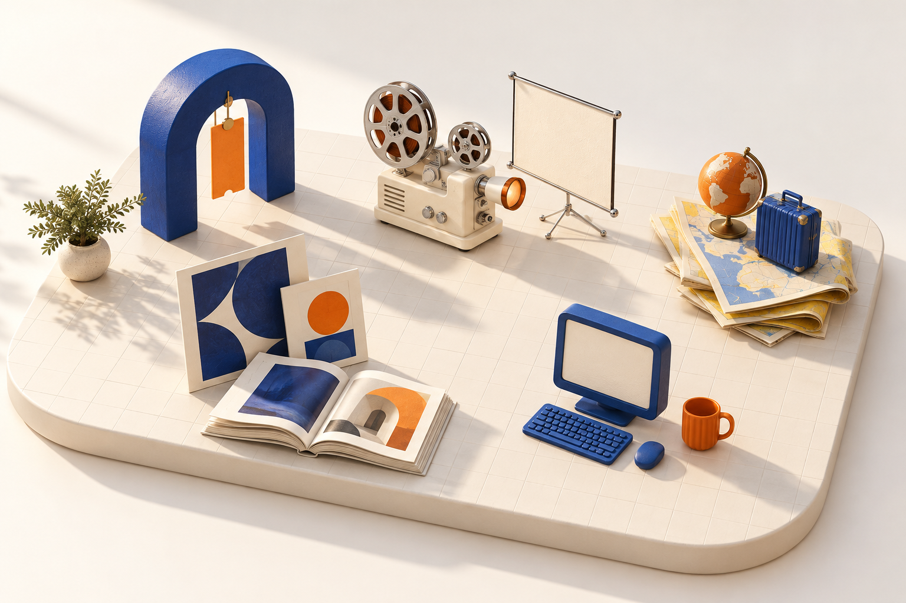
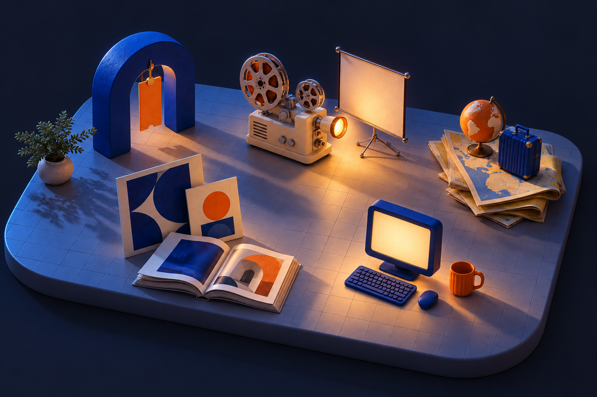
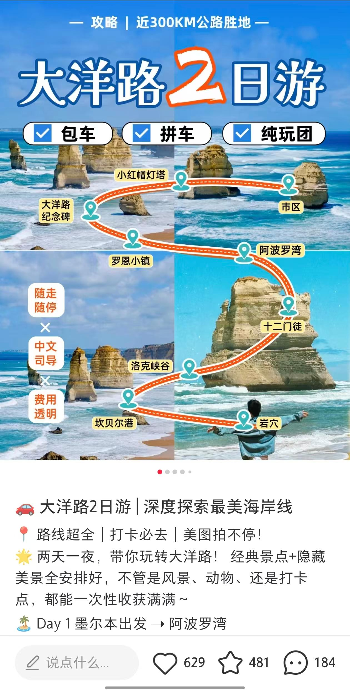
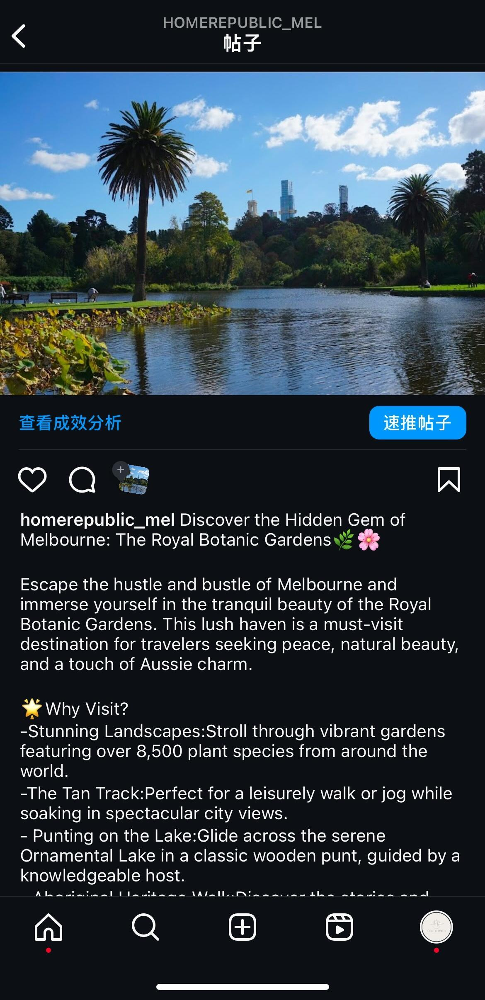
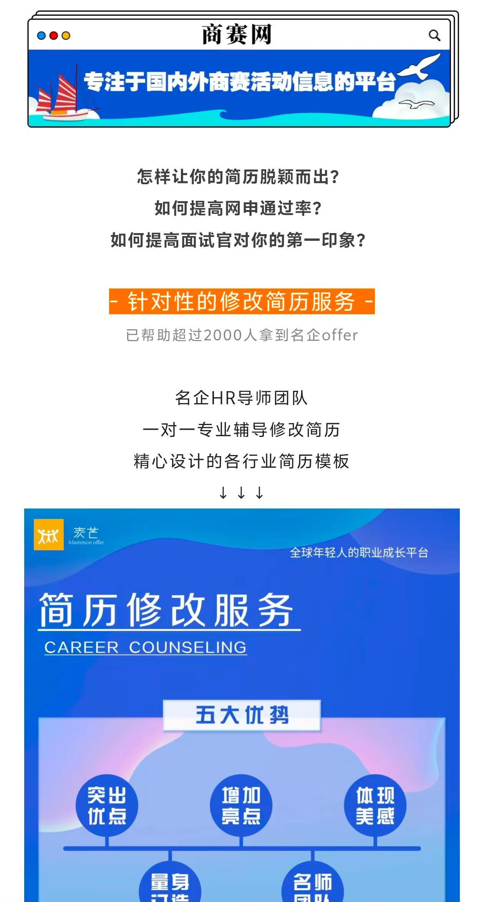
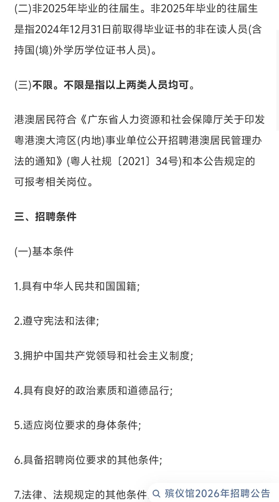

把重复工作留给工具，
把判断留给自己。
已实践：ChatGPT / Codex 辅助整理买家画像、线索分层与英文初稿；可灵、即梦辅助生成创意画面。
探索中：AI Agent 工作流。LIN SU'S CREATIVE STUDIO / 2026
海外营销 · AI 创意 · 内容策略
我是粟琳。用文字、影像和一点想象力，
连接产品与真实的人。


从海外买家的采购需求，到一段值得收藏的旅行攻略。这里是我在不同场景里，做过的内容与尝试。

让好产品，被全球买家看见。
海外社媒 / 英文文案 / AI 视频 / 买家沟通
把澳洲路线，写成可收藏的旅行攻略。
小红书 / 旅行内容 / 选题策划
用自然的英文，连接墨尔本的生活方式。
英文文案 / 本地生活 / 品牌内容
把服务信息，整理成清晰的微信长图。
微信公众号 / 图文编辑 / 内容排版
让招聘信息的重点，一眼就能找到。
招聘编辑 / 信息设计 / 海报以下数字对应锦汉海外社媒实习期间的个人工作记录，统计截至 2026 年 10 月；与下方 YouTube 单条累计观看和 MOMO 单篇互动分别统计。
线稿变成实物，产品走出画框。
点击播放，在短视频里看见产品的另一种可能。
创意落在“形态变化”这一瞬间；保留相关文案提示记录、作品画面和最终视频，呈现从构思到成片的工作方式。
 CONTENT HAPPENS WITH PEOPLE.
CONTENT HAPPENS WITH PEOPLE.我喜欢把复杂的信息，变成读者愿意停留的内容。在锦汉展的实践中，我参与产品选题、英文表达、视频创意与买家沟通，也在现场协助客户了解活动。
广西民族大学 · 播音与主持艺术本科
2023.09—2027.06
常用工具与工作流
工具服务于具体任务。下面区分我已实践的工作流，以及正在探索的能力。
已实践：ChatGPT / Codex 辅助整理买家画像、线索分层与英文初稿；可灵、即梦辅助生成创意画面。
探索中：AI Agent 工作流。已实践：B2B 英文文案、短视频构思与剪辑；使用剪映和 Canva 完成内容制作。
作品见锦汉文案、AI 放映室与公众号项目。已实践：使用 Excel、VLOOKUP、SUMIF 进行信息整理与分类，结合后台截图审视内容表现。
账号总览与个人产出分别标注口径。已实践：Facebook、Instagram、TikTok、YouTube、LinkedIn 与 Pinterest 的内容策划及买家沟通。
按视觉吸引、行业表达与采购路径调整内容。海外社媒 · 品牌内容 · 中英文文案 · 创意视频
原始作品保留发布时的语言。
↑